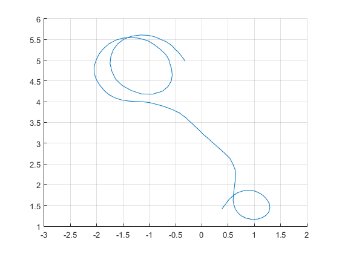

EKF Tricycle Estimation
Contents
Housekeeping
clearvars; close all; clc;
asv;
addPathsMBE;
Constants, Inputs, Parameters, and Initialization
cart_EKF_meas();
lradara = -1;
lradarb = 1;
sig_rhoa = 0.002;
sig_rhob = 0.002;
qtilsteer = 0.10;
qtilspeed = 21.25;
b = 0.1;
tausteer = 0.25;
tauspeed = 0.60;
meanspeed = 2.1;
Rk = diag([sig_rhoa^2 sig_rhob^2]);
Qk = diag([qtilsteer qtilspeed])/(thist(2)-thist(1));
[xguess,Pguess] = cartInit0(zhist,thist);
Filter setup
ffunc = 'f_cart';
hfunc = 'h_cart';
nRK = 20;
uk = zeros(length(thist),1);
ekf = batch_EKF(ffunc,hfunc,'CD',xguess,Pguess,uk,zhist,thist,Qk,Rk,nRK);
ekf = ekf.doFilter();
Results
hold on
plot(ekf.xhathist(2,:),ekf.xhathist(3,:))
grid on
xlim([-3 2])
ylim([1 6])
mean_eta = mean(ekf.eta_nuhist)
Nk = length(thist);
r1 = chi2inv(0.05/2,size(zhist,2)*Nk)/Nk
r2 = chi2inv(1-0.05/2,size(zhist,2)*Nk)/Nk
mean_eta =
2.2229
r1 =
1.6273
r2 =
2.4106
